PastethreadPrivacy Policy
Effective date: October 9, 2026 · Developer: Luke Cha · Contact: jjunghyup@gmail.com
What the app processes
When capture is on, Pastethread reads supported clipboard changes (text, images, and file references) and stores a history on your Mac, together with your settings, small previews of copied image and video files, and — only if you turn it on — text recognized in images on your device.
Paste Rules
If you create paste rules, Pastethread rewrites the clipboard on your Mac for the app in front (for example, replacing a copied image with its file path) and keeps the original item in memory to restore it. It never reads your keystrokes and never pastes into other apps for you.
What is shared
Nothing. Pastethread has no account, cloud sync, analytics, advertising, or third-party SDKs, and does not send clipboard contents or any other data to the developer or anyone else.
Storage and security
History, previews, settings, and exported archives are stored in Pastethread's app container on your Mac and are not encrypted by the app. macOS account and file-system protections apply. Exported archives can contain full clipboard contents; store and share them carefully. Deleted items may still exist in backups you make.
Your choices
- Pause capture at any time from the menu bar.
- Exclude apps (such as password managers) in Settings › Privacy.
- Set history limits and automatic retention, and delete items or all history.
- Uninstalling the app and its container removes its data.
Children
Pastethread is a general utility and does not knowingly collect information from anyone, including children.
Contact and changes
If you contact support, the information you choose to send is used only to answer you. Changes to this policy are posted on this page with a new effective date.